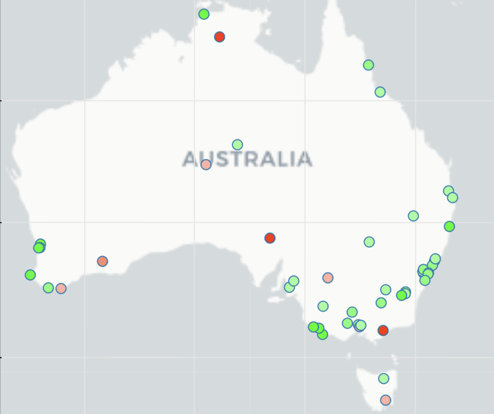

Wettervorhersage
in Australien
Data Science Projekt in Form einer
interaktiven Web App
zur Echtzeit-Wettervorhersage.
Scikit-Learn, Bokeh, Selenium, SHAP, Streamlit, Docker
 Dies ist das Abschlussprojekt meines dreimonatigen Data Science Bootcamps bei DataScientest. Ziel war es, die Regenwahrscheinlichkeit an 49 Orten in Australien anhand von sehr begrenzten Wetterdaten des vorherigen Tages zu bestimmen. Das Endprodukt ist eine interaktive Streamlit App mit Web Scraping Funktion. Auf Knopfdruck zieht die App innerhalb weniger Sekunden Wetterdaten von heute aus dem Netz, verarbeitet diese und lässt sie, je nach Ort, durch eins von vielen vortrainierten ML-Modellen laufen. Das Modell prognostiziert dann das Wetter von morgen und interpretiert sein sogar eigenes Ergebnis. Das heißt es liefert einige Informationen dazu, inwiefern die einzelnen Faktoren (Temperatur, Luftfeuchtigkeit etc.) die gegebene Prognose beeinflusst haben.
Die App ist auf der Plattform render.com öffentlich zugänglich gemacht. Aufgrund der Größe der App – sie beinhaltet einen ganzen Chrome Browser, um das Web Scraping mit Selenium zu ermöglichen – und weil ich die kostenfreie Option gewählt habe, braucht die App beim erstmaligen Laden leider circa 30 Sekunden um den Dockercontainer neu hochzufahren. Danach funktioniert sie jedoch reibungsfrei und mit wenig Latenz. Das zugehörige Code Repository ist auf GitHub und das Docker Image auf DockerHub ersichtlich.